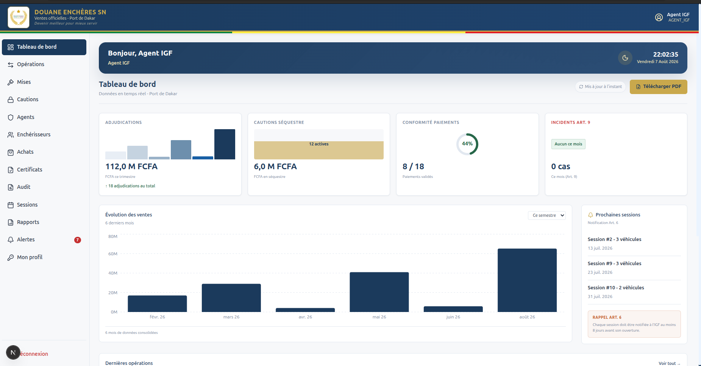

Douane Enchères SN
Une plateforme d'enchères en ligne pour les véhicules saisis par la Douane sénégalaise au Port de Dakar, avec mises en temps réel sur le web et sur mobile, conforme à l'arrêté n° 013712/MEFP/DGD/DRCI du 14 juillet 2015.
- Mon rôle
- Temps réel, sécurité des mises, application mobile
- Équipe
- En binôme avec Alpha Oumar Diallo
- Stack
- Next.js · TypeScript · PostgreSQL · Prisma · Socket.io · React Native (Expo)
- Statut
- Déployé en démonstration (Render) · soutenu 16/20

Le contexte
Les véhicules saisis par la douane sont revendus aux enchères. Le projet consistait à numériser toute la vente, de l'inscription de l'acheteur jusqu'au certificat d'adjudication, en respectant à la lettre l'arrêté qui l'encadre.
Ça implique six profils aux droits très différents : enchérisseur, agent des douanes, administrateur, inspection (IGF), super-administrateur et visiteur. Et des règles juridiques à traduire en code : caution obligatoire avant de miser, interdiction pour les agents des douanes d'enchérir (art. 22), prolongation des fins d'enchères (art. 9), revente si le gagnant ne paie pas.
L'architecture
- Un seul serveur Node fait tourner Next.js et Socket.io sur le même port : les routes API qui enregistrent une mise peuvent la diffuser immédiatement aux participants.
- Chaque session d'enchères a sa room Socket.io : un client ne reçoit que les événements de la vente qu'il regarde (nouvelle mise, surenchère, prolongation).
- Le web s'authentifie par cookie (NextAuth), le mobile par jeton JWT : les mêmes routes acceptent les deux, sans dupliquer la logique métier.
- Derrière le proxy de Render, la connexion WebSocket ne s'établit pas toujours : Socket.io bascule sur du long-polling au lieu de laisser le client bloqué.
Les défis techniques
Deux mises à la même milliseconde
Deux acheteurs misent au même moment sur la même voiture. Les deux requêtes lisent le prix actuel avant que l'autre n'ait écrit, les deux passent la vérification, et on se retrouve avec deux mises « gagnantes ». Ce bug ne se voit jamais en test, seulement en vrai, au pire moment.
La solution : chaque mise passe dans une transaction qui verrouille la ligne de la voiture (SELECT … FOR UPDATE) et relit le prix à l'intérieur du verrou. Les mises concurrentes sur une même voiture s'exécutent les unes après les autres ; celles sur des voitures différentes ne se bloquent pas entre elles.
await prisma.$transaction(async (tx) => {
// Verrou sur la voiture : les mises concurrentes passent une par une
await tx.$queryRaw`SELECT 1 FROM voitures WHERE id = ${voitureId} FOR UPDATE`
// Le prix est relu À L'INTÉRIEUR du verrou, jamais avant
const prixActuel = await meilleureMise(tx, sessionId, voitureId)
if (montant < prixActuel + palier) return { insuffisant: true }
await tx.mise.updateMany({ where: { voitureId, estGagnante: true },
data: { estGagnante: false } })
return tx.mise.create({ data: { montant, voitureId, estGagnante: true } })
})La mise de la dernière seconde
Sans garde-fou, il suffit de miser à 2 secondes de la fin pour gagner sans laisser aux autres le temps de répondre. L'arrêté impose une prolongation.
Toute mise placée dans les 3 dernières minutes repousse la fin de 3 minutes, dans la même transaction que la mise. Un événement soft-close envoie la nouvelle heure de fin à tous les participants, pour que tous les comptes à rebours restent synchronisés.
Plusieurs voitures dans une même vente
Une session regroupe plusieurs véhicules. La première version calculait le prix actuel par session : une mise sur une voiture changeait le prix affiché d'une autre.
J'ai rattaché chaque mise à sa voiture et recalculé prix, mise gagnante et alertes de surenchère par véhicule. Les événements temps réel portent l'identifiant de la voiture, pour qu'un écran ignore ceux qui ne le concernent pas.
Le gagnant qui ne paie pas
Si l'adjudicataire ne règle pas sous 48 heures, le véhicule doit être remis en vente (la « folle enchère »). Au départ, ça dépendait d'un bouton qu'un administrateur devait penser à cliquer.
Une tâche automatique vérifie les échéances toutes les heures et au démarrage du serveur, pour rattraper ce qui a été manqué pendant un redémarrage. Elle et le bouton manuel appellent la même fonction, protégée pour qu'un même paiement ne soit jamais traité deux fois.
Ce que j'ai fait
- La couche temps réel : serveur Socket.io, rooms par session, événements de mise, de surenchère et de prolongation.
- La sécurisation des mises concurrentes et le calcul du prix par véhicule.
- Les notifications e-mail et WhatsApp aux étapes clés (surenchère, adjudication, paiement…).
- La folle enchère automatique.
- L'essentiel de l'application mobile Expo : inscription avec photo, catalogue, enchères en direct, caution, paiement, certificats.
Alpha Oumar Diallo a posé la structure du projet, le schéma de données et le déploiement sur Render.
Le résultat
- Les 68 tâches du cahier des charges livrées et vérifiées par un audit fonctionnel final.
- Enchères temps réel validées entre le web et un téléphone réel.
- Projet de fin de licence soutenu avec la note de 16/20, déployé en démonstration sur Render.
- Paiement CinetPay et WhatsApp Business intégrés mais en mode simulation : il ne manque que les comptes marchands pour passer en réel.